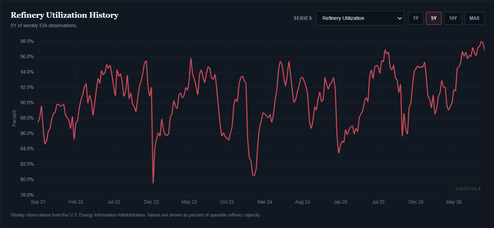

Why a Diesel Export Ban Wouldn't Solve the Diesel Crisis
Commentary - Aubrey Waddle - 9/21/2026
Why a Diesel Export Ban Wouldn't Solve the Diesel Crisis
There is growing political pressure for the Trump administration to ban U.S. diesel exports in response to the current fuel crisis. Republican lawmakers, including Sen. Chuck Grassley and Reps. Ashley Hinson and Zach Nunn, have argued that restricting exports would keep more diesel in the United States and provide relief to American consumers, farmers, and truckers. The proposal comes as U.S. diesel prices have reached record nominal levels amid severe disruptions to global distillate supplies.
At first glance, the argument seems intuitive: the United States is exporting enormous quantities of diesel while Americans are paying extraordinarily high prices for it. Stop exporting diesel, keep that fuel here, increase domestic supply, and prices should fall.
The problem is that this treats the American petroleum market as though it exists independently of the global market and treats diesel as though refiners can simply choose how much of it they want to produce. Neither is really the case.
Understanding why requires understanding some basic refinery economics.
A barrel of crude oil does not enter a refinery and become a barrel of gasoline or a barrel of diesel. Refineries process crude into a slate of products—gasoline, diesel and other distillates, jet fuel, petroleum gases, feedstocks, and other products. Refiners have some ability to adjust that product mix, but only within technological and economic limits.
So, generally speaking, the process looks something like this:
Crude oil → refinery → gasoline + diesel + jet fuel + other petroleum products
Those products then have to find markets.
Under the current system, those markets are both domestic and international. American demand is therefore being met within the context of a global petroleum market rather than an isolated American one.
A refinery is not primarily deciding where its diesel goes based on whether every American gas station has been adequately supplied. It responds to prices. If an overseas buyer is willing to pay more for a barrel of diesel than a domestic buyer, after accounting for transportation and other costs, there is an economic incentive to export it.
That is particularly important right now. According to the EIA, reduced refinery activity in Russia, China, and the Middle East has tightened global distillate supplies and driven international diesel prices higher. Those higher prices simultaneously make diesel more expensive for the United States to import and make exporting American diesel more profitable. U.S. distillate inventories are consequently about 13 percent below their five-year seasonal average, even though American refineries are already running extremely hard: refinery utilization reached 97 percent in the week ending September 11.

So what happens if the government suddenly prohibits diesel exports?
Initially, proponents of the ban would probably get some of what they want.
Imagine a refinery currently produces 300 units of diesel. Domestic buyers purchase 220 and foreign buyers purchase the remaining 80. Prohibit exports and those 80 units suddenly have nowhere to go internationally.
They are redirected toward the domestic market or inventories:
300 produced − 220 domestically consumed = 80 units of excess diesel
That additional supply would put downward pressure on domestic wholesale diesel prices. Meanwhile, removing American diesel from the international market would do precisely the opposite abroad: global supply would become even tighter and international diesel prices would rise.
The United States would therefore temporarily create two increasingly disconnected markets: relatively cheaper diesel trapped inside the United States and increasingly expensive diesel outside it.
But refiners cannot indefinitely produce diesel that nobody wants to purchase at a profitable price. Storage is finite, and storage itself costs money. As inventories accumulate and domestic diesel prices fall, refinery margins on producing that diesel deteriorate.
Eventually, refiners have to respond.
And they cannot simply say, "We'll stop producing diesel and continue producing everything else."
Diesel is part of the product slate generated when crude oil moves through a refinery. If refiners cannot economically sell part of that output, eventually the rational response is to process less crude.
Diesel export ban → excess domestic diesel → falling diesel margins → lower refinery profitability → reduced crude runs.
And reducing crude runs does not merely reduce diesel production. It also means producing less gasoline, jet fuel, and other petroleum products.
This is where the apparent solution begins to boomerang.
The initial diesel surplus pushes domestic diesel prices downward, but that same price decline undermines the economics that caused refiners to produce the diesel in the first place. Refinery utilization falls, petroleum-product output declines, inventories stop accumulating, and eventually the original domestic surplus begins disappearing.
Meanwhile, the rest of the world has not disappeared.
Removing U.S. diesel exports from an already extremely tight international distillate market would put additional upward pressure on global diesel prices. The EIA explicitly notes that today's tight global distillate market is already raising international prices and incentivizing unusually high U.S. exports. U.S. distillate exports were roughly 1.6 million barrels per day during the week ending September 11.
The United States also both imports and exports petroleum products. That seemingly contradictory arrangement exists partly because the American petroleum system is geographically fragmented. A barrel sitting on the Gulf Coast is not automatically available to a distributor in New England simply because both are located inside the United States. Pipelines, shipping costs, refinery configurations, product specifications, storage infrastructure, and regional supply relationships all matter.
Consequently, American distributors in regions dependent on imported fuel would still confront the global price that the export ban itself had helped push upward. And if domestic refinery runs decline in response to deteriorating margins, some regions could become even more dependent on those alternative supply channels.
There is therefore a feedback loop:
Ban diesel exports → domestic diesel supply initially increases → domestic diesel prices fall → refinery margins deteriorate → crude runs decline → production of diesel, gasoline, jet fuel, and other products declines → domestic supply tightens again.
At the same time:
Ban U.S. exports → global diesel supply tightens further → international diesel prices rise → imported petroleum products become more expensive → those higher international prices feed back into parts of the American petroleum market.
None of this means a diesel export ban could have no effect whatsoever. In the immediate aftermath of a ban, trapping additional diesel inside the United States could put downward pressure on domestic wholesale prices. The important question is what happens after refiners, distributors, importers, inventories, and international markets begin responding to the new price signals.
The current diesel crisis is fundamentally occurring within a global distillate shortage. U.S. refineries are already operating near maximum utilization, while disruptions to refining and petroleum flows in Russia, China, and the Middle East have reduced international supplies. EIA expects global distillate production to remain below last year's levels in the coming months , which is precisely why American diesel exports have remained unusually high and domestic inventories unusually low.
An export ban does not create new refinery capacity. It does not produce another barrel of crude oil. It does not create additional storage, pipelines, tankers, or refining infrastructure. And it does not solve the international shortage that is producing the extraordinarily high global price for diesel in the first place.
It changes where existing barrels are allowed to go.
That distinction matters. The immediate effect could be a temporary domestic price reduction as exported barrels are trapped inside the United States. But over time, refiners and distributors would adjust: refinery runs could fall, production of multiple petroleum products could decline, regional markets would continue interacting with international suppliers, and the global market would begin transmitting its prices back into the United States through the remaining channels of trade.
With the midterm elections approaching and fuel prices placing significant pressure on consumers, farmers, and the transportation industry, the political attraction to what I would describe as a knee-jerk policy reaction is absolutely in character for todays republican party and the current administration. Republican lawmakers are currently pressing the administration to adopt exactly this approach, while industry groups and critics such as myself argue that restricting exports would likely produce many of these unintended consequences.
The underlying economics, however, are considerably more complicated than simply asking why the United States is exporting diesel while Americans are paying high prices for it. The United States is one component of an interconnected global petroleum market. Restricting one of the flows within that system can change prices temporarily, but the rest of the system does not remain static afterward.